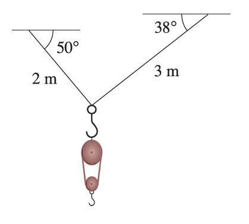

A block-and-tackle pulley hoist is suspended in a warehouse by ropes of lengths 2 m and 3 m. The hoist weighs 350 N. The ropes, fastened at different heights, make angles of \(50^\circ\) and \(38^\circ\) with the horizontal. Find the tension in each rope and the magnitude of each tension.